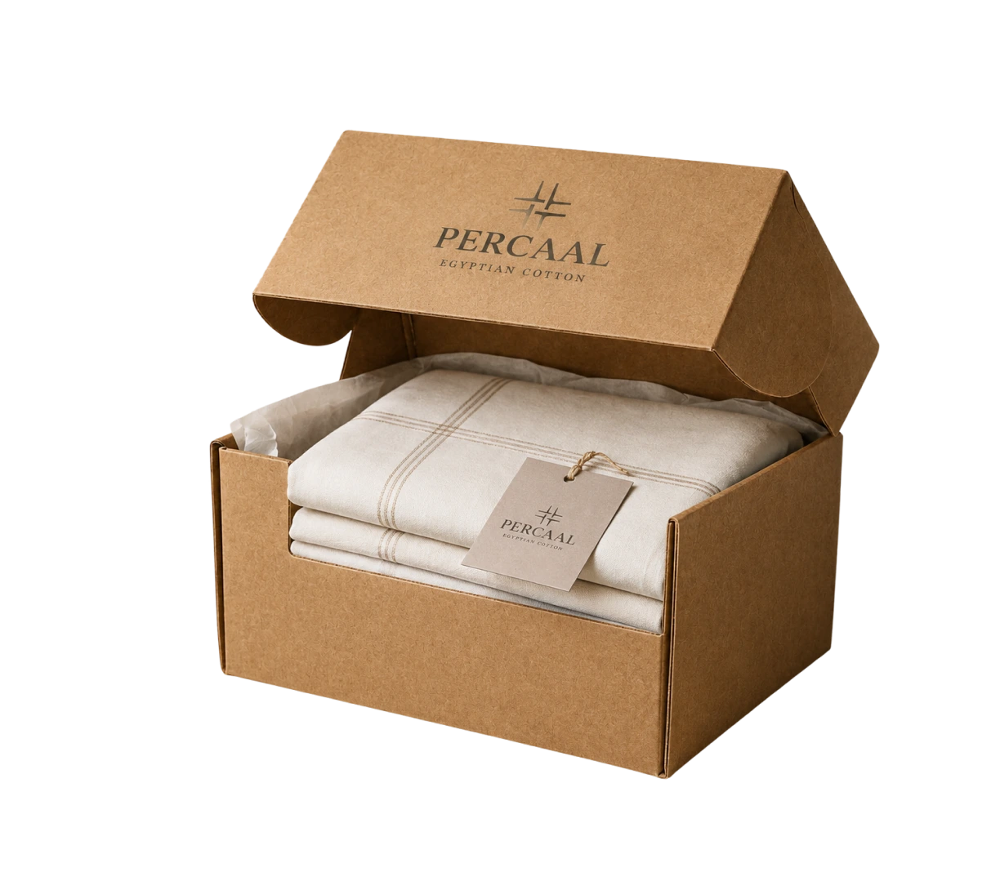

Our Story
About Percaal
Percaal was created with a simple vision — to bring timeless design and refined elegance into one curated space. We believe the cloth you live with is more than something you use: it is a way to express care, individuality and personal style. Our collections are carefully selected to reflect modern living while maintaining a sense of classic sophistication.


Our Philosophy
At Percaal, we focus on pieces that combine quality, comfort and elegance. Each item is chosen with attention to detail, from the fibre to the finish, so that every piece feels effortless to live with and easy to care for.


Message from the Founder
At Percaal, my vision has always been to create a space where people can discover textiles that feel elegant, authentic and truly personal. Every piece in our collection is carefully selected with attention to quality, craftsmanship and timeless style. My goal is to offer more than cloth — a curated experience that helps every home feel considered, comfortable and effortlessly its own.
Sally Helmy

Curated Collections
Premium Quality Fabrics
Global Shipping
Attention to Detail

Worldwide Shipping
At Percaal, we are proud to bring our collections to homes around the world. Our team carefully prepares and ships every order to ensure it arrives safely and in perfect condition. Wherever you are, we strive to deliver a smooth and reliable shipping experience so you can enjoy our pieces with confidence. Delivery times and shipping options vary depending on your location and are confirmed during checkout.